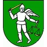

Posledný zápasStarší žiaci U15
 Bojná U15domáci
Bojná U15domáciVýsledok 5:0
 TJ-ŠK Radošinahostia
TJ-ŠK RadošinahostiaVýhrapolčas 2:0
Návrh webu · nie je to oficiálna stránka klubu
IV. liga starších žiakov U15, 6. miesto z 11
Posledný zápasStarší žiaci U15
Bojná U15domáciVýsledok 5:0
TJ-ŠK RadošinahostiaVýhrapolčas 2:0
5–1–4výhry, remízy a prehry vo všetkých súťažiach, skóre 40:34
IV. liga starších žiakov U15
| # | Tím | Z | V | R | P | Skóre | B |
|---|---|---|---|---|---|---|---|
| 1 | 10 | 9 | 0 | 1 | 51:9 | 27 | |
| 2 | 10 | 8 | 2 | 0 | 66:12 | 26 | |
| 3 | 10 | 7 | 0 | 3 | 55:24 | 21 | |
| 4 | 10 | 6 | 2 | 2 | 42:32 | 20 | |
| 5 | 10 | 5 | 3 | 2 | 45:24 | 18 | |
| 6 | 10 | 5 | 1 | 4 | 40:34 | 16 | |
| 7 | 10 | 4 | 2 | 4 | 35:15 | 14 | |
| 8 | 10 | 3 | 0 | 7 | 16:48 | 9 | |
| 9 | 10 | 2 | 0 | 8 | 20:45 | 6 | |
| 10 |  TJ Zlatý Klas Urmince | 10 | 1 | 0 | 9 | 15:85 | 3 |
| 11 | 10 | 0 | 0 | 10 | 7:64 | 0 |
Hráči, ktorí v kalendárnom roku 2026 nastúpili alebo boli v nominácii na zápas (podľa Sportnetu). Pri mládeži uvádzame len mená.